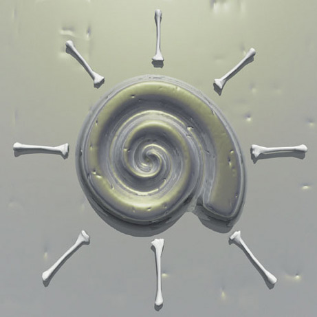

|  |
Discovered by : Sir Humphry Davy
Year Discovered :1808
Isolated in London, UK
Origin : The name is derived from the Latin ‘calx’ meaning lime.
Description :
A silvery white, soft metal that reacts with water. It is used in alloys and in the extraction of other metals, such as thorium, from their ores. Calcium is one of the most abundant elements on Earth. There are vast deposits of limestone (calcium carbonate), and when heated in kilns, this gives off carbon dioxide gas to leave quicklime (calcium oxide). Lime is used to make cement, as a soil conditioner and in water treatment to reduce acidity, and in the chemicals industry. Calcium is essential to all living things, and calcium phosphate is the main component of bone. The average human contains about 1 kilogram of calcium. Children and pregnant women are encouraged to eat foods rich in calcium, such as cheese, milk and white bread, to promote the growth of healthy teeth and bones. |